gimana gampang kan teka tekinyaa???. hmmmm kalau kamu baca ini, berarti aku udah confess ke kamu yaaa??. gimanaa? aku pasti gugup ya waktu bilangnya hahahaha, wajar sih sebenernya aku udah nyimpen perasaan ini udah lama banget, 2 tahun mungkinnn. jadi kalau dikeluarin semuanya, kaya bum bam bommdksoskahhua, meledak.
owh iyah disini aku mau cerita sedikit tentang hkm hkm perasaan aku ke kamu, agak panjang sihh bahkan ada chapternya lohhhh. kalau bisa bacanya dari atass yaa, jangan langsung ke bawahh dan bacanya jangan bareng sama temen kamu yaa, ntar aku maluuu (tapi kalau kamu mau gapapa kok, biar semua orang tau kalau aku beneran suka sama kamu hehehe). selamat membacaaa...
jadii duluu ituuu
akuu kenal kamu karena kita gak sengaja sekelas, aku dulu pertama kali ngeliat kamu itu kaya biasa aja, sama kaya cewe lain, sama kaya tasya, kewew, zahra atau temen temen lainnya yang ada di e6, DAN TERNYATA AKU SALAH. aku gak tau kenapa setiap ketemu sama kamu itu rasanya ANEH, kaya ini orang kenapa sih, kok kaya beda ya, kaya ada something yang gak aku bisa jelasin secara nalar dan logika. aku ngerasa ada yang beda sama kamu, TAPI MASALAHNYA AKU GAK TAU APA, setiap ngobrol sama kamu kaya jantung itu dug dag dug dag kaya drum, tangan dingin kaya kutub utara. TAPI INI MASIH GAK BISA NGEJELASIN KENAPA BISA KAYA GINI. sampai hal yang aku sangka terjadi dan ternyata aku bener. aku gak tau kenapa bisa kaya gitu, aku juga gak ngerti somethingnya itu kaya gimana, tapi yang jelas disitu aku sadar aku lagi jatuh cinta.
awalnya aku cuman nanya nama doang ke kamu, karena aku penasaran, terus sambil sedikit bercanda. pas aku tau namanya aku langsung cari deh di grup e6 (*scroll info grup*, oh ini nomor raisya yang tadi, sv ahh). akhirnya aku chat deh, ini chatnya kamu masih inget kann???...
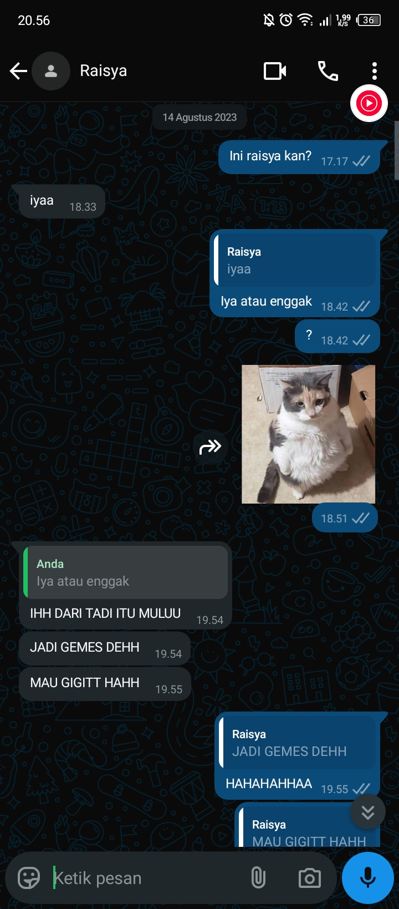
dari balesan kamu aja aku udah kaya ya tuhan lucu banget ini orang, gemesinnnn, ternyata ada orang kaya gini yaaa pengen aku makannn. dari situ aku mulai deketin kamu, segala cara aku lakuin, kaya dulu aku sengaja banget main di deket kursi kamu, biar bisa ngobrol bareng. iseng nanya tugas, kaya "kamu udah belum yang pkn?". bahkan sampai kaya aku sengaja banget acak tempat duduk aku, biar kita bareng kelompoknya.
semua cara aku lakuin biar aku bisa deketin kamu, SEMUANYA RAII. aku udah nyoba buat deketin semua temen kamu biar kita bisa deket, aku udah nyoba buat bikin kagum kamu, contohnya kaya waktu itu aku ikut lomba 17 agustus, lomba debat bahasa, lomba prancis juga. EH AWALNYA DULU AKU PENGEN LOMBA PRANCIS BARENG KAMU YA, cuman dulu aku masih malu malu buat ngajak dan kamunya juga nolak disuruh sama arsya buat ikut lomba ini. jadi temen temen yang lain malah milih arsya aja deh, ya karena dia juga ikut french club sihh, tapi tetep aja dulu aku pengennya sama kamu. dulu juga aku pernah ikut basket cuman karena dulu kamu eskul basket (aku gak tau bener apa enggak, tapi seinget aku kamu dulu pernah ngomong), tapi habis itu aku udah nggak ikut ikut lagi. sampai lomba yang paling jauh itu waktu aku ikut osn.
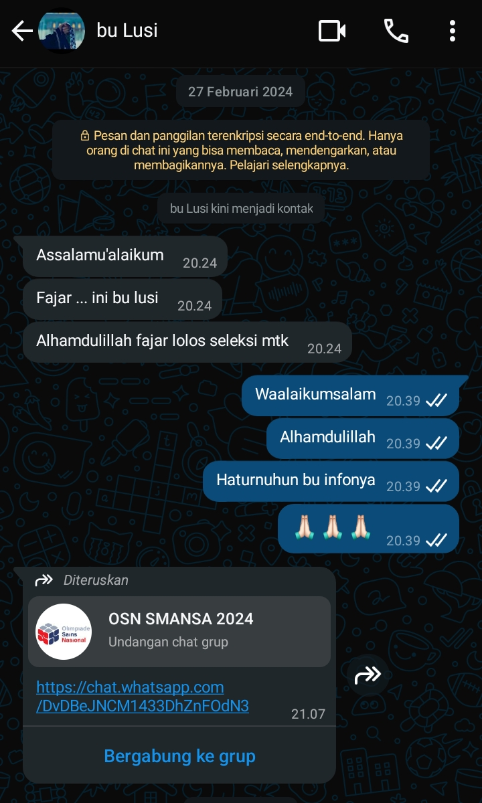
dulu motivasi aku ikut osn itu kamu raii, aku pengen nunjukin kalau aku juga keren loh gak kalah saing sama kaka kelas yang dulu kamu bilang kamu suka. aku belajar pagi, siang, malem bahkan dulu mamah aku sampai bilang mending kamu gak jadi ikut osn kalau tidurnya berantakan. sebenernya wajar aja mamah aku bilang kaya gitu, karena dulu aku bener bener kaya orang gila, tiap hari belajar, tidurnya jam 1 malem, kadang gak tidur sama sekali. tapi sayangnya aku gagal karena gugup waktu jawabnya, pas udah di depan komputer otak aku langsung blank, gak inget apa apa. tapi gapapa mungkin aku gak dapet pujian dari kamu, tapi seenggaknya aku udah nyoba buat berani ikut lomba matematika, dan menurut aku itu udah keren.
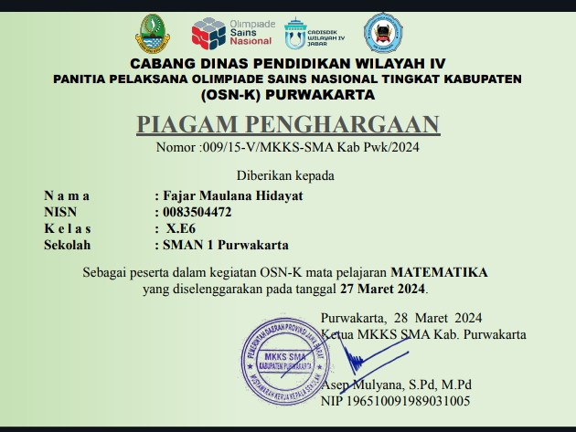
gak ada angin gak ada hujan, aku makin deket sama kamu, apalagi waktu kita sekelompok di mapel seni budaya (iya aku akuin, dulu aku sengaja banget sekelompok bareng kamu), TAPI KENAPA TIBA TIBA ADA ECA???.... aku gak tau waktu itu kenapa bisa gitu, tapi yang penting aku bisa sekelompok sama kamu. dari awal aja aku udah SENENG BANGETTTTTTTTT, kaya ini projek bisa selamanya aja gak sih? bahagia banget waktu aku bisa sekelompok sama kamu, kita jadi deket, sering ngobrol bareng, sering bercanda bareng, dan bahkan aku sampai main ke rumah kamu..
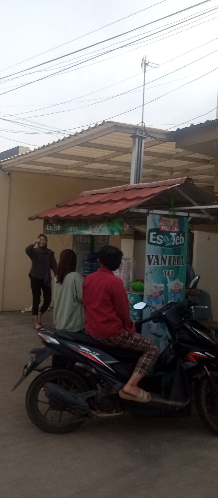
banyak banget kenangan di rumah kamu, mungkin kalau dijelasin satu satu gak bakal cukupppp, jari aku nih yang lagi ngetik kata ini sekarang, mungkin udah kebakar duluan karena aku nulis itu. kenangan di rumah kamu itu salah satu kenangan terbaik yang pernah aku punya, contoh kecilnya kaya aku bisa kenal keluarga kamu, dan keluarga kamu baik buangettttttt, ya kecuali alika, aku masih musuhan sama alikaa (bercanda yaa). tapi dari dulu sampai sekarang aku selalu ke apotek kamu dulu baru masuk ke rumah kamu (malu hehe kalau langsung ke rumah kamu).
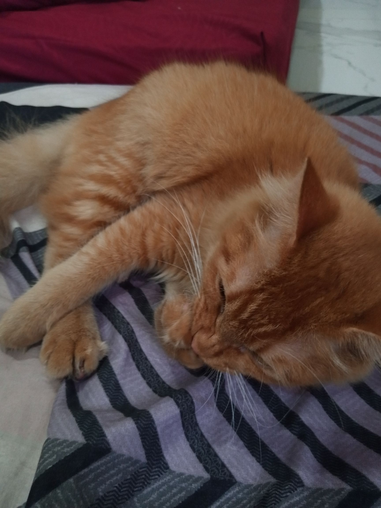
buanyakk bangettt kenangan yang masih aku inget kaya apa yahh, owh SEBLAK, dulu kita kaya wajib banget gak sih kalau ke rumah kamu itu wajib makan seblak. hukumnya itu kaya rumah kamu = makan seblak, jadi kaya sebuah keharusan yang harus dilakukan.
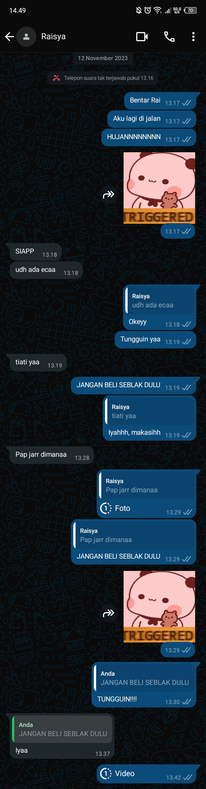
AKU INGET BANGET WAKTU SEBLAK KAMU TUMPAHH, HAHAHAHHAHA. lagian ngeyel sihh, udah dibilangin cantikk kalau nuang seblaknya sama aku ajaa, eh malah bilang "udah aku bisa" jadi tumpah kann. udah jatuh, sisa 1/4 eh nawarin ke adek kamu, gak salah sih tapi kaya lucu aja gituu, udah sisa segitu karena jatuh, kamu masih sempet sempetnya berbagi sama adek kamu, baik bangett...
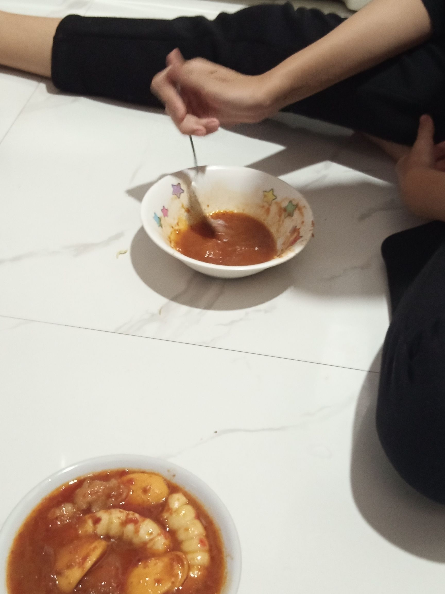
owh iyah ada lagi, waktu kita kerjain tugasnya kita selalu putar lagu penjaga hati kan, kamu masih ingett gak????. kamu dulu yang bikin aku dengerin lagu ini, aku inget banget dulu kamu bilang gini "kamu tau gak, nadhif basalamah bikin lagu ini waktu dia lagi jatuh cinta". lucunya waktu pertama kali denger lagu ini, aku juga lagi jatuh cinta (sama siapa yaa kira kiraa, eh sama kamuuu). aku dengerin setiap malem, aku dengerin waktu hati aku lagi kerasa sepi, aku dengerin hampir setiap hari, bahkan lagu ini sampai jadi top 1 lagu aku paling sering play di Spotify atau di yt music. nih buktinyaa kalau kamu gak percayaaaa....
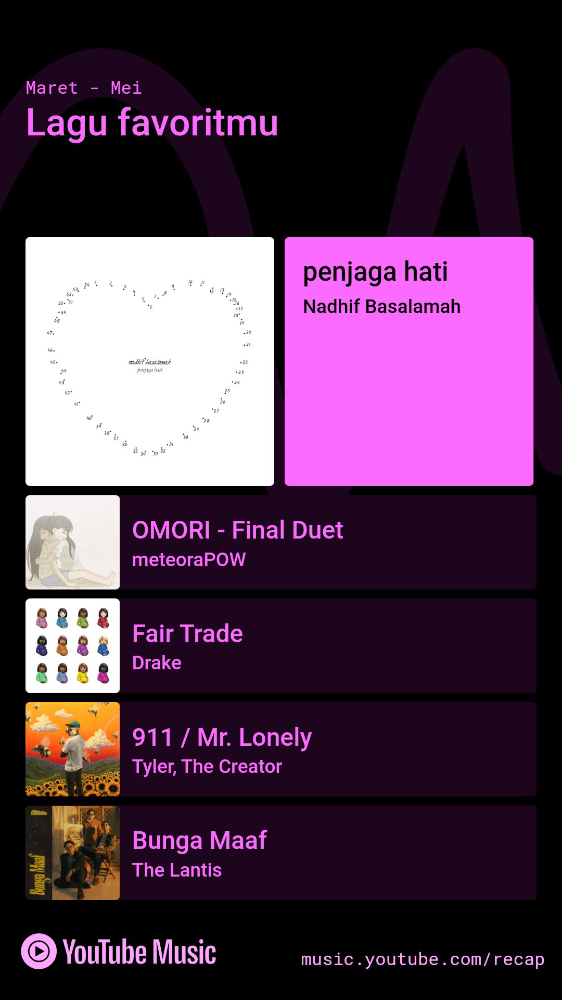
makan seblak udah, kerkom hampir tiap minggu, dengerin lagu juga udah, tapi apa? iyap betul tugasnya gak selesai selasai, kesannya kaya ke rumah kamu itu cuman buat main. EH AKU HAMPIR LUPA, HARUSNYA INI BAGIAN PERTAMA, CUMAN AKU MALES GANTINYA. AKU MASIH INGET BANGET WAKTU KITA NONTON EJEN ALI BARENGGG. percaya gak percaya aku gak pernah fokus sama filmnya, tapi kayanya itu feeling terbaik yang pernah aku rasain waktu nonton sesuatu (kalau nontonnya bareng kamu tentu aja).
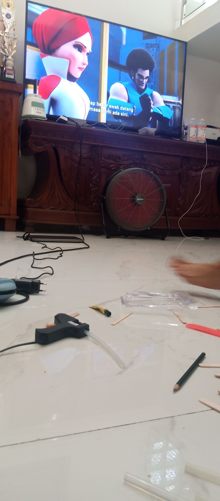
tugas gak selesai selesai karena ada aja kesalahannya, dari stik kayu yang kurang lah, stik kayu yang kecil lah, apalagi? owh eca yang gak selalu ikut kerkom (gapapa sih, biar aku sama kamu aja yang ngerjain, hehehe bercanda), untungnya waktu itu mobilnya beres, tapi ada orang yang cat semuanya pake pilok warna hitam, kira kira siapa ya?......
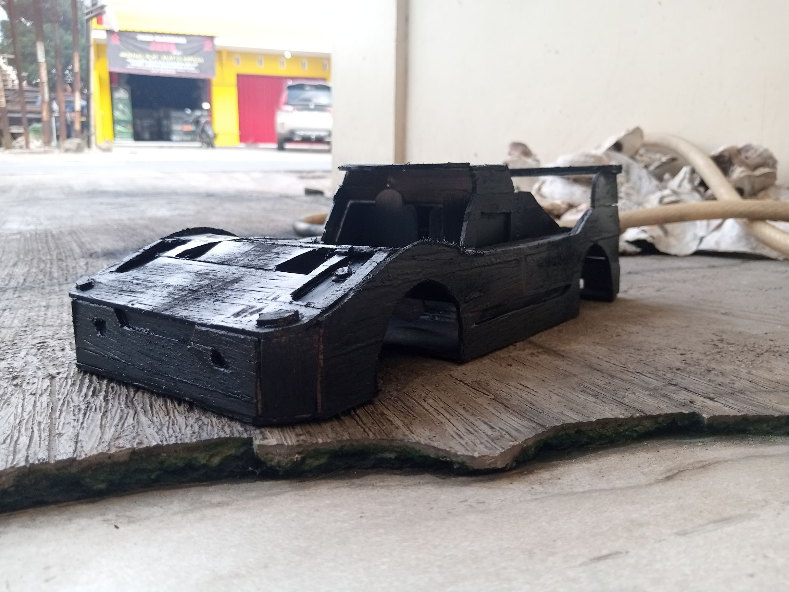
video cinematicnya gak dibikin sama dia, mobilnya jadi warna hitam, dan jarang ikut kerja kelompok. tapi hebatnya kita selesai juga, walaupun aku masih inget rodanya copot sebelah hahahahahaha
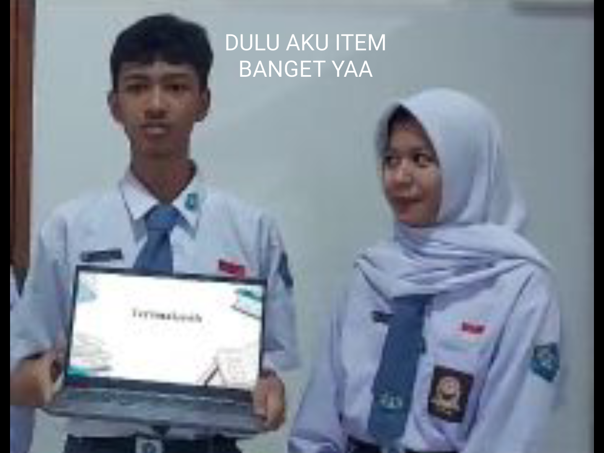
ini video yang diambil sama kesha (kalau gak salah namanya itu, adek kamu yang pertama), aku selalu simpen video/foto waktu itu, karena aku gak tau kapan aku kehilangan kamu dan kapan masa ini bakal berakhir.
semester 1 berlalu, gak kerasa aku sama kamu udah agak kurang deket. harusnya dulu waktu kita masih deket, aku confess ke kamu, tapi aku gak berani. aku takut nanti kalau aku kasih tau perasaan sebenernya tentang kamu, kita gak bakal jadi sahabat lagi, kamu bakal ngejauhin aku, bakal buang muka setiap ketemu aku, bakal canggung kalau ketemu kamu dan dan dan dan dan dan...... mungkin kita jadi asing. jadi aku tahan ego aku buat sementara.
kalau boleh jujur yang berusaha deketin kamu itu banyak banget raii (aku gak bohong dan aku gak mau bilang siapa, tapi jujur aku harus bilang kalau yang mau deketin kamu itu banyak banget), bahkan sahabat aku sendiri, contohnya kaya si A, dia sahabat aku sendiri (mungkin kamu tau siapa). jadi si A ini juga suka sama kamu, bedanya dia gak terlalu mau keliatan, dan waktu semester 2 dia berusaha banget buat deketin kamu. karena aku takut persahabatan aku sama si A kacau cuman karena kita berdua mau deket sama kamu, aku ngalah buat si A.
hari demi hari, bulan demi bulan, tugas demi tugas, dan p5 demi p5 berlalu. aku masih berusaha buat nurunin ego aku buat gak confess perasaan aku, tapi rasanya nyiksa bangett. kaya setiap tidur aku mikir "kenapa dulu aku gak confess ke kamu ya", "kamu punya perasaan sama gak yah sama kaya aku" dan pikiran lainnya. sampai sampai jam tidur aku rusak (lagi).
karena kita udah gak deket lagi kaya dulu, aku berusaha buat move on. aku nyoba olahraga kaya lari, nyoba buat push up setiap malem, nyoba buat beraniin nge-gym, pokoknya aku nyoba buat ngelakuin hal hal yang positif, biar aku gak kepikiran kamu lagi. tapi kenyataannya karena aku orangnya overthinking dan gak bisa tuh yang namanya lupain sesuatu apalagi seseorang yang berarti besar buat aku, jadi aku masih selalu kepikiran tentang kamu kalau lagi mau tidur atau kalau lagi bengong.
waktu semester 2 akhir, yang e6 mau ke villa. aku ada rencana buat confess ke kamu, aku udah nyiapin kata katanya jauh jauh hari. tapi aku gagal karena aku masih ngerasa kalau aku confess sama kamu sekarang kita bakal canggung dan jadi asing. aku pikir dua, tiga, empat, dan akhirnya aku kebanyakan mikir. gak jadi deh, padahal udah dikasih momentnya, mau liat??
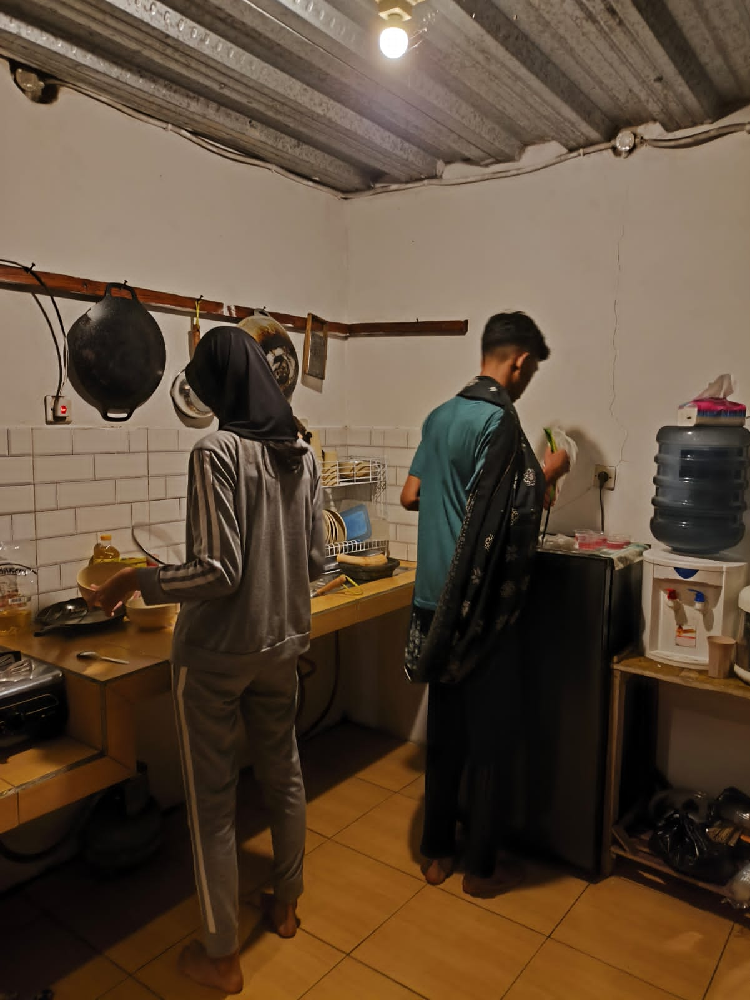
ini difoto sama abdan, padahal disitu aku tinggal ngomong "rai sebenernya aku punya perasaan yang lama aku simpen, aku suka buangettt lohh sama kamu", singkat, pendek, kelar. gak usah tuh bikin kaya gini, ketik panjang panjang, gak usah tuh lanjut sampai ke kelas 11, 12. tapi mungkin mental aku belum siap, dan aku gak jadi ngomong.
akhirnya karena kejadian itu, aku nyoba buat move on dan fokus buat diri aku sendiri. aku fokus buat olahraga, belajar, self reward. aku fokus buat nanti masuk paket 3 dan nanti bakal masuk ke ptn apa. tapi aku mikir dalem hati "terus perasaan aku sama kamu gimana, apa dibiarin aja", akhirnya aku mikir. karena aku tau kamu bakal pilih paket 1 (ya karena kamu pernah bilang ke aku, kamu mau jadi dokter anak). sooo aku mikirr, gimana kalau nanti aja waktu kelas 11 aku confess ke kamuu, biar gak canggung canggung banget kalau pun ditolak, atau jadi temen biasa, soalnya pasti beda kelas.
di kelas 11 aku udah nyoba move on, udah konsisten olahraga, dan udah jarang mikirin kamu lagi (ya karena aku ketemu sama bu atun juga sih hahaha), jadinya aku fokus belajar. tapii aku bakal bohong kalau aku gak kangen kamu, bohong kalau aku gak pengen deket lagi sama kamu, tapi apa boleh buat kamu udah beda kelas, dan kita udah gak sedeket dulu. jadi aku berusaha buat lupain aja dan nyoba fokus sama diri sendiri.
karena waktu kelas 10 aku punya niat buat confess ke kamu, tapi aku rasa udah gak perlu karena aku udah move on. jadi aku tanam niat itu, dan aku berusaha buat fokus kejar nilai. tapi salahnya aku disini, kamu mungkin tau kalau aku orangnya oversharing BANGET (pake buangett), aku sering banget cerita ke temen temen aku tentang perasaan aku ke kamu, dan mungkin semua orang yang kenal aku tau kalau aku suka sama kamu (hiper bola, tapi beneran).
semua temen aku tau kalau aku suka sama kamu, salah satunya dicky, arsya, yessica, sama ripa. dulu aku sering ngobrol sama mereka gimana caranya biar bisa deket sama kamu. tapi itu duluu sekarang aku mau fokus buat belajar. tapi aku gak tau kenapa, waktu pertama kali presentasi pkn mulai, aku ngerasa kaya ada yang ganjil di hati aku, aku ngerasa kaya ada sesuatu yang ketinggalan, aku ngerasa aku punya hutang sama seseorang.
buah jeruk buah nangka, ternyata tidak ku sangka, perasaan ganjil itu datengnya dari kamu, akhirnya aku mutusin buat cerita ke diki. diki selalu support aku kalau ada sesuatu, kalau aku lagi mau cerita ke dia, diki selalu dengerin, selalu dukung, jadi aku suka cerita ke dia. singkatnya aku cerita ke dia semuanyaaa, dan mungkin kata dia aku belum confess ke kamu, jadi aku masih kepikiran. waktu diki bilang gitu, aku langsung mikir dan nanya ke diri sendiri (apa iyah aku masih mau confess?).
disisi lain arsya, yessica masih sering bercanda sama aku, kadang mereka suka nanya "fajar kangen raisya??" atau kadang suka nanya kabar "gimana udah confess belum" dan hal hal lainnya. tapi kesalahannya disini, aku waktu itu ketemu arsya dan dia lagi eskul voli. aku sapa kan terus dia balik sapa. ehh aku iseng nanya "raisya-nya mana???" terus dia jawab kan "owh nanyainn, kangen yaa", aku jawab tuh "iyahh kangen bangett", eh dia bilang "bener yaa, nanti aku bilang", terus aku bilang "sok ajaaa, udah beda kelas juga sih (nada nantang)", terus arsya kaya ngasih gestur "oke, awas ya kamu nanti aku kasih tau ke rai". aku gak mikir dia bakal ngomong beneran kan, aku kira kaya yaudah sih bercanda doang, kaya cuman buat senyum senyum doang, tapiiii.....
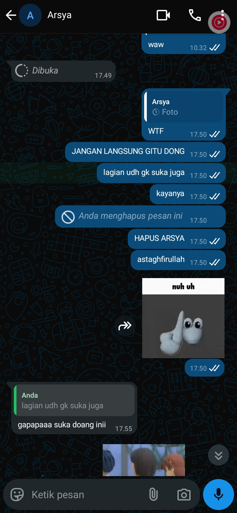
besoknya pagi pagi aku chat kan, takutnya dia beneran kirim (TAPI SALAHNYA AKU, AKU CHATNYA KAYA LAGI NANTANGIN GITU), akhirnya dia ngirim beneran ke kamu, kaya apaksjsjsjsi. aku panik kan, aku takut beneran dikirim. KAMU TAU APA, TERNYATA BENERAN DIKIRIM DONGG. aku kaya AMKAJSHDID sorenya, dan berdoa itu gak beneran. DAMN tapi ternyata itu beneran, dan akhirnya aku bilang kalau aku udah gak suka (biar dihapus sama dia pesannya), tapi respon arsyanya malah kaya gitu. akhirnya aku harus nerima fakta kalau kita temenan aja, aku gak masalah tentang itu, serius (gak juga sih hehehehe). tapi jujur di sore itu aku lebih mikir gimana nanti kitanya, apa nanti gak asing ?, emang nanti kamu masih mau temenan sama aku?, aku takut nanti kamu selalu buang muka kalau ketemu sama aku. PADAHAL WAKTU ITU AKU UDAH NYOBA MOVE ON...
dan bener aja, setelah kejadian itu aku kalau ketemu sama kamu, kamu selalu buang muka. aku jadi ngerasa bersalah, dan jadi nyesel bercanda sama arsya. aku tau dia niatnya baik, dan aku gak pernah nyalain dia. aku nyalahin diri aku sendiri, kenapa harus sampai arsya yang ngomong ke kamu, bukannya aku langsung yang ngomong sama kamu.
akhirnya setelah semua hal itu terjadi di semester 3, aku punya ide di semester 4 ini. aku pengen confess ke kamu langsung face to face. ini ide beneran gila, karena kita udah asing.... aku gak tau caranya gimana, kita udah gak deket, aneh banget kann kalau misalnya tiba tiba aku ngajak ngobrol bareng kamu? (kaya ini si fajar kenapa dah "pikiran aku waktu itu"). jadi aku cerita LAGI ke diki, terus terbesit di pikiran aku "bentar lagi kan rai ulang tahun, gimana kalau aku kasih kado ke dia, terus kita bisa ngobrol bareng dehh". akhirnyaa aku minta saran ke diki beliin apa kalau misalnya dia bikin kado buat cewe, terus dia bilang parfum. jadi aku punya rencana, waktu kamu ulang tahun aku mau ngasih parfum sama surat, isi suratnya aku mau ngajak kita ketemuan waktu pulang sekolah biar kita bisa ngobrol bareng.
aku inget banget waktu aku beli parfum itu, aku minta saran ke temen sekelas aku, saran dari mereka aku tolak semua, terus aku malah beli parfum saff n co. JUJUR AKU GAK TAU WANGINYA KAYA GIMANA, AKU ASAL BELI. aku cuman liat di tiktok banyak yang review dan mereka bilang ini wanginya enak dan unik, cocok buat orang yang menurut aku itu kaya kamu. pendiem, lucu, manis, cantik, baik, cantik, kayanya kalau disebutin semua tangan aku keburu kebakar.
parfum udah sampai di rumah, terus aku baru mikir ntar ngasihnya pake apa (aku baru mikir kaya gini itu pas 1 hari sebelum ulang tahun kamu), akhirnya aku nyoba buat nyari di toko boy sehabis pulang sekolah, jam 4 lah kalau gak salah (dan itu keadaannya lagi hujan lumayan gede). di toko boy gak ada paperbag. adanya mainan lego, so aku iseng beli buat kamu. harusnya yang gede sih, cuman di toko boy itu harganya overprice semua, mending beli online lebih murah, lagian juga gak terlalu lengkap kalau di toko boy, di online mungkin ada semua. tapi masalahnya aku gak punya waktu kalau beli online, jadi aku beliin yang kecil aja. lagian bukan hadiah yang aku pengen kasih, aku cuman pengen jujur tentang perasaan aku.
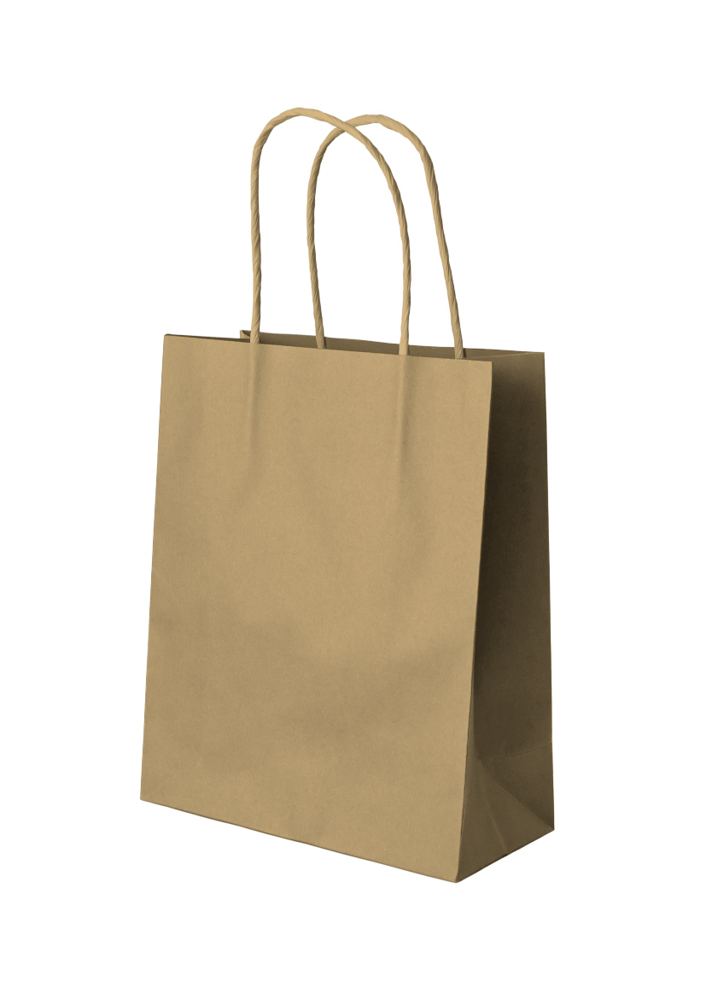
di toko boy gak ada paperpack atau back, yang intinya itu lah, kamu tau kan yang kaya gimana?... intinya yang kaya di gambar (TERNYATA NAMANYA PAPERBAG). aku jalan dari toko aa ke mr diy. hujan hujanan, dan itu bener bener yang kaya riweh banget tauu, dan untungnya tas sama buku bukunya aman (untung aku gak bawa ukbm waktu itu). intinya di mr diy ini ada itu ada, dan beneran ada. aku nemuin paperback kertas. terus pas pulang aku mampir ke indomaret buat nunggu hujan sebentar, sekalian beli makanan ringan. eh gak sengaja kepikiran, kenapa gak bawa coklat juga ya, akhirnya aku beli coklat deh, eh tapi tiba tiba aku dichat sama mamah aku, dan disuruh pulang (ya wajar sih, aku lupa kabarin dan itu udah jam 6 lebih). akhirnya aku buru buru pulang dan taro coklatnya dikantong, coklatnya basah karena kena air hujann. pulang pulang langsung kena omel cuyyy, tapi gapapa yang penting dapet semua.
pagi pagi buta aku bangun, terus aku siap siap sekolah, mamah aku aja sampai kaget ngeliat aku kaya gini, yang biasanya bangun paling akhir, ini malah bangun pertama. langit masih gelap aku udah di sekolah, aku ke kelas kamu bawa kadonya, tapi lucunya aku belum kasih nama ini kadonya dari siapa, akhirnya aku tulis di depan kelas f3 BANGET (dibantu sama nana). kado udah dikasih, eh jam 7 nya aku ditarik sama temen temen kamu buat ketemuan sama kamu, BAHKAN FITO NARIK BAJU AKU SAMPAI BAJUNYA KENDOR. pas ketemu, orang orang pada teriak, aku kira gak bakal kaya orang lagi demo minta naik gaji, TERNYATA AKU SALAH (kejadian waktu itu beneran serusuh itu ternyata). f2 berisik, f3 juga, f4 ngeliatin, f1 UDAH KAYA DEMO BURUH, RUSUH PARAH (aku masih gak enak tentang kejadian itu, maaf yaaa).
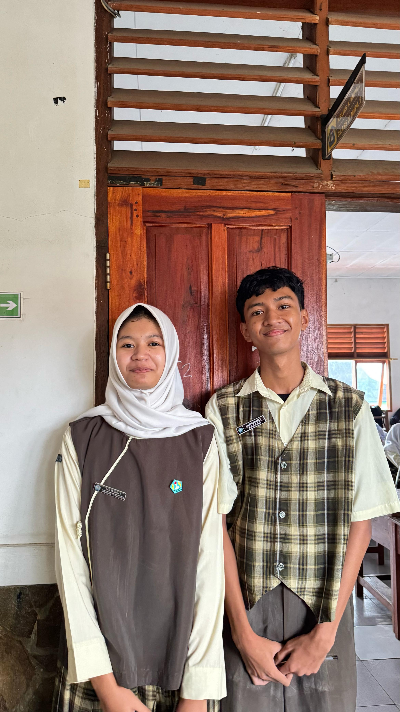
PLIS DULU JELEK BANGET AKUNYAAA (SEKARANG JUGA SAMA SIHH HAHAAHAHA). HABIS FOTO BARENG AKU PANIK HARUS NGAPAIN, TIBA TIBA NGEBLANK, JADI AKU BURU BURU BALIK. harusnya aku bilang "nanti pulang sekolah ketemu sama aku ya", tapi karena hype aku gak ngomong deh takut malah nambah rame.
lagi lagi karena ketakutan aku, aku gak mau ke kelas kamu buat ngobrol bareng. akhirnya aku nyoba buat chat kamu aja dan buat minta maaf juga kan, karena tadi kaya rame banget takut kamunya risih. sehari dua hari chatan masih normal, tapi aku malah keterusan (terlalu berlebihan). ego aku mulai naik lagi, aku gak mikirin perasaan kamu, aku gak mikirin tentang kesibukan kamu, aku malah chat kamu hampir tiap hari, padahal aku ngechatnya kurang penting. harusnya aku nyoba buat ngertiin kamu, bukan chat kamu setiap hari. aku minta maaf yaa karena udah bikin kamu risih.
dari kesalahan itu, aku mulai sadar kalau ternyata ego itu bisa bikin kita gak sadar diri. akhirnya aku nyoba buat evaluasi diri aku sendiri dengan cara curhat ke temen temen aku, termasuk fito. selama puasa aku evaluasi diri, dan nemu jalan buat nyelesain hal ini, apalagi kalau bukan ngomong langsung kann. fito udah bilang langsung ngobrol aja, ke kelasnya langsung, tatap dia, ngomong langsung, gak usah kaya bencong. dari perkataan itu aku harus jujur dia bener banget.
tapi waktu itu aku masih takut banget (PAKE BANGET), jadi aku masih mikir mikir. aku udah nyoba buat latihan sendiri, aku curhat ke gpt gimana caranya aku bisa ngobrol sama seseorang yang aku suka tapi dengan keadaan kaya gini, aku udah nyoba nyari ke orang lain gimana caranya ngobrol tentang perasaan ke perempuan, tapi jujur semua informasi atau saran dari mereka semua itu gak ngaruh sama sekali, aku masih takut banget (pengecut sih lebih tepatnya).
waktu tugas teater, aku gak pernah nyangka kalau aku bakal ketemu sama kamu. awalnya aku cuman ngira kamu udah pulang duluan, gak ada niatan fotbar, bahkan gak ada niatan apapun. TIBA TIBA BANGET ARSYA SAMA UMI NAHAN AKU, BILANG BENTAR JAR, BENTAR. bener aja kata firasat aku. tiba tiba arsya bilang, ayo kalian fotbar. terus aku kaya HAH INI BENERAN???, aku baru aja bikin risih anak dokter, kok dia mau foto bareng sama aku. mangkanya aku nanya lagi sama kamu, kamu beneran mau??, aku takut kamu kepaksa, tapi kamu bilang gapapa, jadi kita fotbar dehhhh.
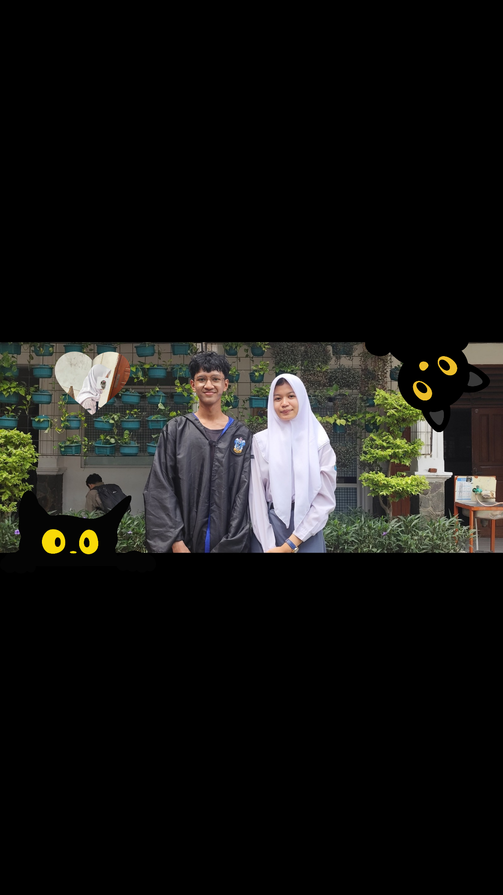
maaf ya kalau akunya jelek hehe, aku masih inget tuh si fito ngambil jubah aku, UDAH MAH PAKE SENDAL ORANG GEMBEL YANG KEGEDEAN, DITAMBAH PAKE BAJU BOLONG BOLONG, aduh malu banget. habis selesai difoto aku jadi mikirr, gimana ya perasaan kamu, akunya juga jadi malah kepedean. apa mungkinnn kamu juga suka sama aku yaa, apa mungkin kamu juga selama ini punya perasaan yang sama kaya aku. jadi setelah fotbar itu, ego aku naik lagi tapi gak kaya waktu itu. aku nyoba gak chat kamu berlebihan, cuman buat minta foto fotbar doang. nah tapi bagian egonya bukan disituu....
waktu event smansa, yang kita pake baju adat dari daerah bebas. waktu itu johan bercanda sama kamu, bilang "itu fajar katanya mau fotbar". AKU YANG LAGI DIEM LANGSUNG PURA PURA GAK LIAT KAN (beneran deh, aku kalau aku bisa mukul pala johan waktu itu, aku pukul beneran). akhirnya rara juga kaya ayo fotbar fotbar, karena aku ngerasa kamu punya perasaan yang sama, jadii aku minta ke kamu juga. tapi harusnya aku jangan buru buru, aku gak mikir perasaan kamu kaya gimana, aku gak mikir temen temen kamu bakal bilang apa, aku gak mikir kalau nanti kamu diketawain gimana. mangkanya foto yang waktu itu aku gak pernah minta...
akhirnya aku sadar ego aku udah mainin perasaan aku, aku harusnya lebih sadar dan jangan selalu ngikutin ego aku.
waktu berlalu cepat, dan aku gak sadar ternyata udah tugas senbud yang kedua, yaitu nyanyi. di event ini aku gak berharap apa apa ke kamu, aku nyoba buat nurunin ego aku, aku nyoba buat bikin hati ini berhenti ngejar kamu. jadi waktu eventnya aku nyoba buat ngejauh, tapi karena kelompok terakhir di kelas aku tampilnya terakhir, dan karena aku bagian dokumentasi, jadi aku tungguin.
aku duduk di meja ujung deket tembok dan liat kamu nyanyi waktu itu, KERENNN BANGETTTTTTTTT TAUUUU. suara oji juga bagus bangettt, serius deh f1 itu bagus bagus semua, waktu rara tampil aja, suara dia bagus buangettttt. sehabis tampil f1, semua anggotanya pada bubar kan dan aku ketemu kamu, aku gak tau kamu liat aku atau enggak tapi aku waktu itu aku sapa kamu, mungkin kamu gak liat atau buang muka (?). akhirnya karena malu aku liat ke meydina terus aku sapa dia. aku ngira mungkin kamu juga risih kalau ketemu aku, akhirnya disitu aku buru buru pulang dan gak jadi dokumentasiin kelas aku.
sebelum pulang, aku beli minum sama johan di mang aday dan cerita ke johan tentang kejadian tadi, terus akhirnya kita balik lagi ke sekolah buat ngambil tas di kelasnya johan. tapi disitu arsya sama yessica ngajak fotbar lagi, disitu sebenernya aku gak mau, mangkanya aku nolak kann. jadinya foto bareng temen temen yang lain. tapi waktu itu ada rara, dia kaya langsung bilang "eh kalian fotbar kan, udah sini mana hpnya, fotbar dulu" akhirnya kita fotbar. disitu aku gak enak sama kamu, karena kita selalu fotbar kalau ada event, aku gak enak sama kamu, takutnya kamu risih karena aku.
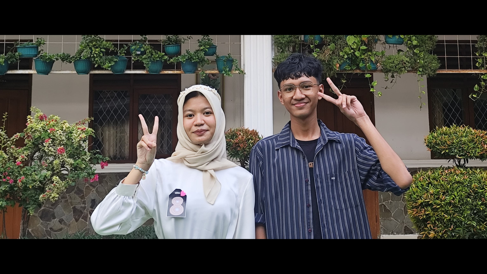
habis event itu semua, aku mikir "kenapa setiap ada event, aku malah sia siain, kenapa aku gak pernah berani buat ngobrol sama kamu tentang perasaan yang aku punya". akhirnya p5 dimulai, jam kosong kapan aja, dan tiba tiba kelas kamu juga pindah jadi ke f10 karena bu atun. harusnya dulu aku confess ke kamu waktu p5. hari pertama p5 aku bikin rencana buat confess, hari kedua aku nyoba buat nyari jalannya gimana, dan di hari ke tiga aku nyoba buat confess, padahal waktu itu kamu lagu istirahat nari. fito juga udah bilang, "ayo sama gw sini gw yang panggil, lu tinggal ngobrol" cuman aku dulu beneran masih takut banget, jadi aku bilang, "besok ajalah" ujar fajar, dan kamu tau apa, iyap akhirnya gak jadi LAGI.
waktu hari terakhir sebelum hari h p5, aku nungguin kamu di f9, cuman biar aku bisa ngobrol bareng kamu. waktu itu aku ditemenin sama zaka dari f9, dia ngajak pulang bareng, jadi dia tungguin aku confess. tapi masalahnya waktu itu dia lagi sakit dan itu bikin akunya gak enak sama dia. jam 4 udah terlihat di jam dinding, dan kamu masih latihan. karena aku gak enak sama dia, aku nanya ke zaka "ayo jak pulang aja, gw bisa confess ke dia kapan aja, masalahnya lu lagi sakit sekarang, mending balik aja" tapi dia selalu bilang "nyantai jar, bentar lagi juga pulang gw mah pulang bisa kapan aja". jam 5 udah lewat, disitu aku mikir "emang kamu dapet apa sih jar kalau kamu nungguin rai, ujung ujungnya kamu bakal gak confess juga kan, gak bakal berani kamu, mending balik aja bareng jaka, dia lagi sakit, kalau kamu gak pulang sekarang, mungkin jaka bakal tambah sakit jar, rumah dia lumayan jauh lohh" dan otomatis dari pikiran aku tersebut, aku langsung mutusin buat hilangin ego aku, dan pulang bareng zaka.
dan disitu aku jadi mikir, apa aku gak usah confess ya, kamu juga mungkin udah tau.
musim ulangan dimulai, aku udah gak mikir mikir buat confess lagi, fito juga udah males dengerin curhatan aku tentang kamu (gak fito aja sih, kayanya semua orang yang jadi tempat curhat aku udah pada nyerah semua). tapi waktu lomba diakhir akhir aku ada sedikit terbesit niat buat confess lagi, akhirnya aku tunggu hari terakhir lomba. aku udah semangat, dan percaya diri kalau misalnya kali ini aku bakal ngomong sama kamu. siangnya aku chat kamu, aku tunggu respon kamu sampai pembagian juara. ternyata kamu belum bales, akhirnya aku pulang. aku mikir mungkin mungkin kamu lagi sibuk, eh ternyata pas aku udah sampai di rumah, ada notif chat dari kamu. kamu bilang lagi di uks, dan nanya kenapa jar?. aku bilang aja deh kalau sebenernya tadi aku cuman pengen ngobrol sebentar, dan seterusnyaaa
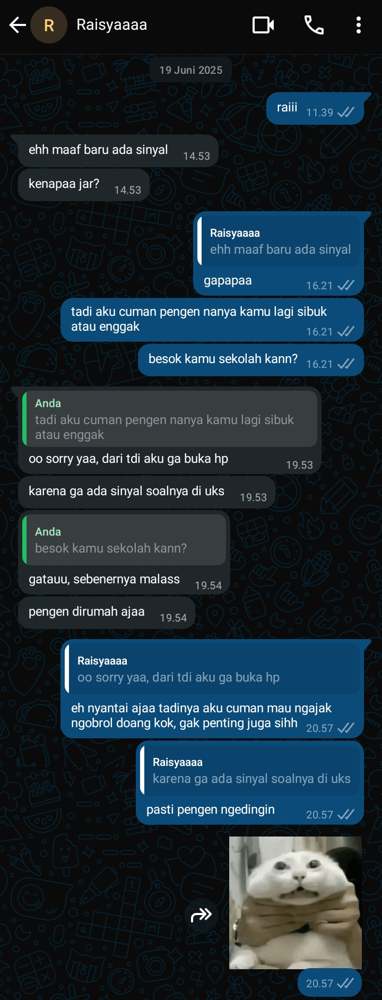
aku pikir karena masih ada hari pengambilan rapot di minggu depan, jadi aku masih punya kesempatan. aku nyoba buat chat kamu lagi, dan ternyata kamu bisa kalau hari rabu. waktu hari ngambil rapot tiba, aku nyoba buat chat kamu. ternyata gak dibales bales, akhirnya aku ke kelas kamu dan ketemu oji sama joko, ternyata kata mereka ngambil rapotnya belum dimulai. aku disitu mikirnya "ohhh mungkin kamu lagi sibuk", jadi aku tunggu aja balesan dari kamu, aku nunggunya di f9. ber jam jam kemudian aku nyoba buat ke kelas kamu lagi, tapi ternyata aku ketemu rara di deket tangga f10. aku nyoba nanya ke dia "ra raisya udah pulangg?", terus kata dia udah. dalem hati aku mungkin kamunya lagi buru buru dan gak sempet buka hp kamu. jadiiii mungkinn kamu gak sadarr, teruss aku pulang dehhh.
mungkin kamu tau aku orangnya overthinking parah, aku takut kamu selama ini risih sama aku dan jadinya kamu gak mau ngobrol sama aku. jadi aku CURHAT LAGI SAMA DIKI, intinya aku bilang kalau misalnya aku kepikiran tentang hal ini, aku pengen cepet cepet kelar masalah ini, AKU MAU FOKUS UTBK. terus diki ingetin kalau emang kamu itu kan jarang megang hp sama buka wa, dari situ aku mikir owh iyah juga yaa. jadi aku nyoba buat berhentii overthinking dan fokus dulu ke diri aku sendiri lagi.
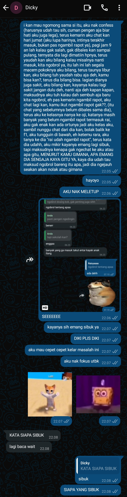
jujur yaa dulu waktu kelas 11, aku udah janji ke diri aku sendiri kalau nanti di kelas 12 aku gak bakal confess ke kamu, aku gak bakal mikirin kamu lagi, aku mau fokus utbk dan ngejar itb. karena percuma juga sih kalau aku nyoba confess lagi, aku juga gak bakal ngelakuin karena aku takut (itu kata pikiran aku), tapi buktinyaa aku masih aja mikirin kamu, aku masih dengerin lagu penjaga hati dan selalu inget kalau dulu kita itu pernah deket bangetttt. kenapa rasanya sekarang gak bisa gitu?.
aku jadi gak fokus belajar, bahkan makan aku juga jadi nambah (funfact tubuh fajar, kalau dia lagi stress dia bakal lebih banyak makan, bukan malah kurang). akhirnya aku nyoba BUAT CURHAT LAGI SAMA DIKI (emang diki kesayangan aku). intinya dia bilang kalau kamu mau confess confess aja, gak ada salahnya kok. walaupun kita udah gak deket lagi, tapi aku NEKAT BUAT NYOBA CONFESS LAGI DI KELAS 12 SEKARANG.
akhirnya waktu kelas 12 aku nyoba buat nyari moment yang pas. udah dapet moment yang pas, akunya tetep aja gak bisa. rasa takut ini terus menghantui aku, padahal waktu itu udah berani dan udah sampai di f3, tapi itu kaki aku udah gak bisa langkah lagi ke kelas kamu, pikiran aku langsung kaya "UDAH JAR PULANG PULANG" karena otak aku bilang gitu, jadi aku pulang. aku pulang dengan penyesalan, tapi aku gak nyerah, aku nyoba besok lagi. dari yang cuman bisa langkahin kaki di f3, udah berani ke f2, pas udah berani di f2 aku nyoba ke kelas kamu tapi waktu kamu udah pulang. lama kelamaan aku jadi berani dan pengen nyoba ngobrol sama kamu.
jumat 8 agustus. hari itu aku mikir, kalau di minggu terakhir ini aku gak berani buat confess, aku bakal kasih semua akun game yang aku punya ke fito. aku ngomong ke fito kalau misalnya akun game aku buat dia, terus dia bilang kan "lah gw mah udah gak main game", terus aku lanjutin ngomong "kalau misalnya gw hari ini gak jadi confess ke dia, akun gw buat lu 100%, lu mau hapus, lu mau jual, lu mau pake terserah lu", terus kata fito "lu beneran jar, ini di mesjid loh", terus aku ngangguk dan bilang "beneran lah, masa enggak". akhirnya karena hal itu, aku jadi berani buat ngobrol sama kamu, aku kaya punya tujuan sama hukuman kalau gak confess ke kamu. akhirnya aku berani buat ke kelas kamu dan ketemu sama kamu. ITU CRINGE MAMPUS SERIUS, KAYANYA ITU HAL PALING MENAKUTKAN YANG PERNAH AKU LAKUIN SEUMUR HIDUP AKU, PRESENTASI BU ATUN LEWAT, MENDING AKU PRESENTASI BU ATUN 10 KALI RAII, 10 KALI DIBANDINGKAN AKU HARUS NGOBROL KAYA KEMARIN. GILAA ITU TANGAN AKU GAK BERHENTI GEMETER, JANTUNG AKU KAYA DUG DAG DUG CEPET BANGET, BAHKAN AKU NGOMONGNYA GUGUP BANGET, PAKE BUANGETTTT YAHH, OTAK AKU LANGSUNG NGE BLANK, BENERAN KAYA ORANG KENA ASMA ATTACK TAU GAK??, NAFASNYA GAK TERATUR HAHAHAHHAHAHA.
tapi gapapa aku bangga karena aku berani buat ngomong langsung ke kamu, awalnya aku pengen dichat aja, cuman kurang gentle aja gitu, gak enak lah pokoknya. lagian kamunya juga jarang megang hp kann, jadi aku ajak ngobrol langsung ajaa. habis kejadian kemarin AKU GAK BISA TIDUR BENERAN, BAHKAN SEKARANG NIH, AKU NULIS INI MALEM MALEM. aku masih kepikiran tentang kamu, wajar sih baru kemarin kejadiannya. tapi yah habis kejadian itu aku udah gak kepikiran lagi tentang perasaan aku, lebih lega lahhh. enak banget pokoknya, tapi kadang kalau lagi bengong aku suka senyum senyum sendiri, karena aku ngebayangin waktu aku ngomong kemarin "euuu sebenernya" hahahhaha lucu banget.
akhirnya perasaan aku tersampaikan juga ke kamu, walau mungkin aku lupa nanya waktu itu. sebenernya kamu punya perasaan ke aku juga atau enggak?, tapi karena waktu itu aku lagi dug dag dug ser, jadi aku lupaaa hehehehhee....
hii raii, makasih yaa udah baca sampai sini. aku tau kamu pasti lama banget bacanya… dan jujur, aku seneng banget kamu mau nyempetin waktu buat baca ini. aku cuma pengen jujur… sebenernya aku masih suka sama kamu. walau aku bilang kita temenan aja, dan kamu juga bilang gitu… aku bakal tetep suka sama kamu. aku bilang kita temenan, karena aku tau kamu punya cita-cita. aku gak mau ganggu cita-cita kamu, cuma karena aku egois pengen kita deket lagi. aku pengen kamu jadi dokter yang hebat… dan mungkin nanti, ada waktunya kita bisa deket lagi. tapi sebelum waktu itu datang… aku cuma mau liat kamu bahagia.
jangan asing yaa sama aku… aku cuma mau kita tetap bisa ngobrol… walau cuma sebentar… walau cuma tentang hal sepele. jangan buang muka kalau aku nyapa… jangan pura pura gak kenal, karena aku gak mau kenangan kita cuma jadi bayangan. aku masih inget semua momen kecil itu… ketawa yang gak sengaja keluar, seblak yang tumpah, tatapan singkat yang cuma beberapa detik, semua itu aku simpan. dan aku takut banget kalau suatu hari, semua itu cuma berarti buat aku. pliss… jangan sampai kita jadi asing lagi… aku udah pernah rasain rasanya kehilangan padahal orangnya masih ada di depan mata. itu sakit banget… kayak ketemu orang yang dulu pernah jadi rumah, tapi sekarang cuma jadi tempat yang asing… dingin… sepi… dan kita cuma lewat… tanpa sapa… tanpa senyum… tanpa apa-apa.
dan terakhir… aku cuma mau bilang makasih ke kamu. makasih udah jadi inspirasi aku, makasih udah bikin aku jadi lebih baik dari yang dulu, makasih udah jadi alasan kenapa aku semangat sekolah, makasih udah jadi orang baik yang selalu menghargai aku walaupun itu hal-hal kecil, makasih udah pernah hadir di hidup aku, makasih udah mau dengerin aku di saat semua orang sibuk sama dunianya sendiri, makasih udah bikin aku ngerasa berharga, walau cuma sebentar. dan kalau suatu hari nanti kita udah jarang ketemu, atau bahkan udah gak saling sapa… aku tetep mau bilang makasih, dari jauh, karena pernah ada satu masa di hidup aku, dimana aku bener-bener bersyukur… bisa kenal sama kamu.
dan kalau waktu bisa diulang… mungkin aku bakal tetap milih buat kenal sama kamu, meski ujungnya begini.
Fajar Maulana Hidayat,
10 Agustus 2025.